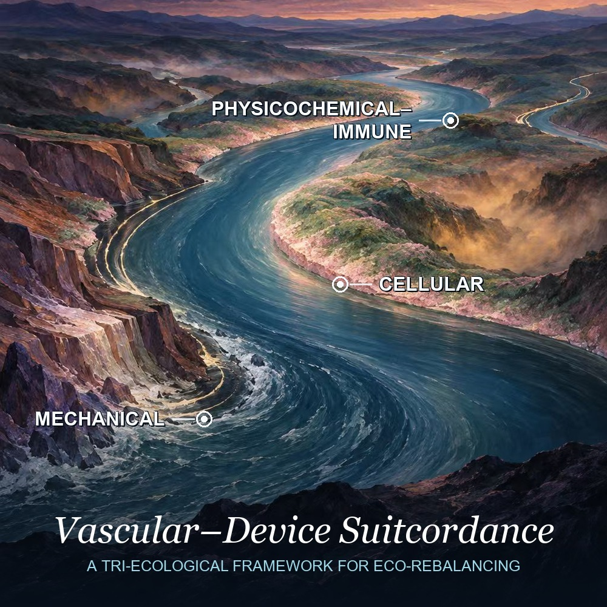
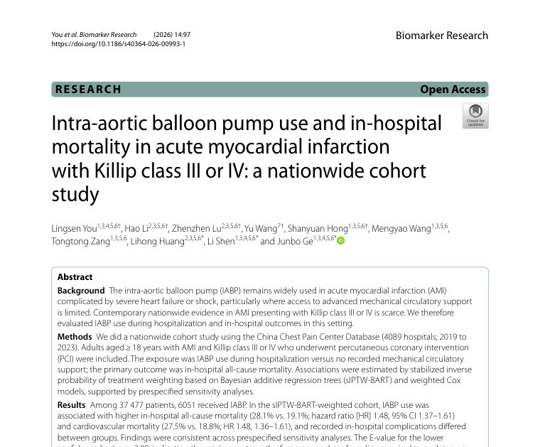
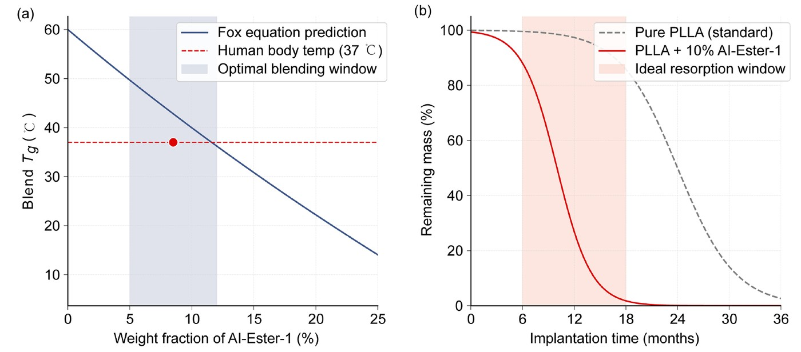

Vascular–Device Suitcordance: a tri-ecological framework for eco-rebalancing
Trends in Molecular MedicineCell Press 2025 JIF 18.1World-Class Sci-Tech Journal
Interventional cardiology · Zhongshan Hospital, Fudan University
A stent can be perfectly deployed and still be a poor fit. I work on the fit.
Suitcordance names the state that matters over a patient’s lifetime: immediate mechanical suitability, plus long-term biological concordance with the living wall. One measure spanning three balances, on both the acute and the chronic timescale.
Matching an intervention to vessel anatomy, haemodynamics, biology and time — from preclinical validation through to clinical use.
Intravascular imaging, intelligent photonics and patient-specific modelling, moving vascular care from static assessment toward adaptive decisions.
Flexible electronics, intelligent fibres and organ-on-chip systems that connect sensing, intervention and longitudinal evaluation across vascular beds.
Nine, newest first. Citation counts were read from OpenAlex on 18 September 2026 and are shown only where a paper has one; the two newest indexed papers are weeks old and have none yet.

Trends in Molecular MedicineCell Press 2025 JIF 18.1World-Class Sci-Tech Journal

Light: Science & ApplicationsNature Portfolio 2025 JIF 24.0World-Class Sci-Tech Journal

Biomarker ResearchSpringer Nature 2025 JIF 15.0World-Class Sci-Tech Journal

Chinese Science Bulletin 科学通报Science China Press CAS Tier 1World-Class Sci-Tech Journal

Science BulletinScience China Press · Elsevier 2025 JIF 21.1World-Class Sci-Tech Journal

npj Flexible ElectronicsNature Portfolio 2025 JIF 15.4World-Class Sci-Tech Journal

European Heart JournalOxford University Press 2025 JIF 45.3World-Class Sci-Tech Journal

Advanced Fiber MaterialsSpringer Nature 2025 JIF 22.6World-Class Sci-Tech JournalBest Cover Article 2024–2025

ResearchScience Partner Journal · AAAS 2025 JIF 12.9World-Class Sci-Tech Journal
World-Class Sci-Tech Journal marks the 2025 list released by the Institute of Scientific and Technical Information of China on 12 September 2026. Journal impact factors are the 2025 values released in June 2026.
Counted from OpenAlex single-record lookups on 18 September 2026, one per DOI, and reproducible from the DOIs above. Aggregate author profiles are not used here: the OpenAlex author record for this name is merged with another researcher, and quoting it would overstate the total.
Eight standing questions at the medicine × engineering frontier, searched live in PubMed with citation counts from OpenAlex. Every record carries its DOI and exports to a reference manager. Nothing is machine-written.
Open the radar → ProgrammeA non-profit route for undergraduates into active medical–engineering teams in China: real sub-projects, a named mentor, authorship earned under ICMJE criteria. No fee is charged and no publication is promised.
See the programme →FootballAn active amateur player, representing Zhongshan Hospital in Shanghai’s municipal competitions.
SwimmingThe endurance built in the pool is the same endurance a long case asks for.
TravelA dozen countries so far, from the ruins of Rome to the Swiss Alps, and still counting.
Shanghai, China. Open to collaboration on device–vessel suitcordance, preclinical device evaluation and intravascular imaging, and to hearing from students who want to do real work.